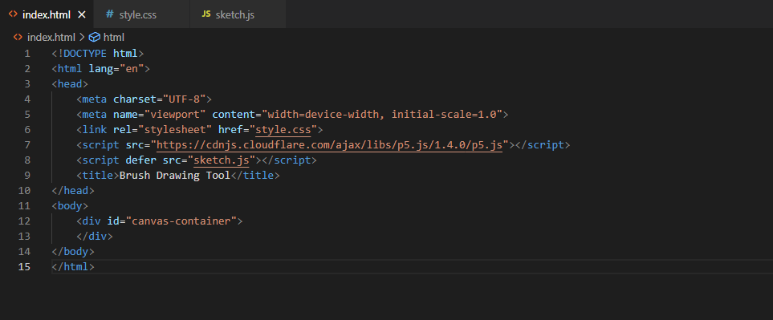
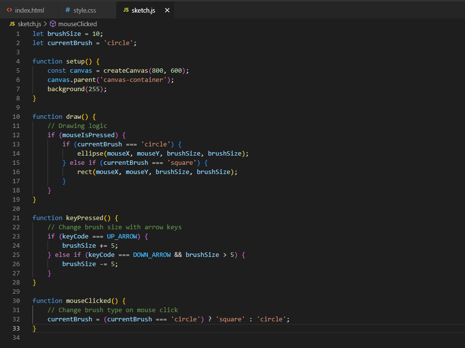
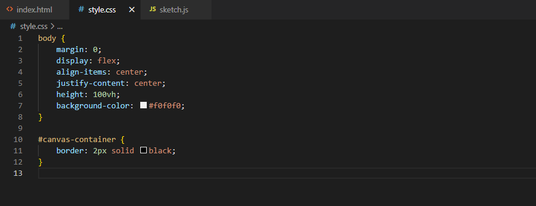
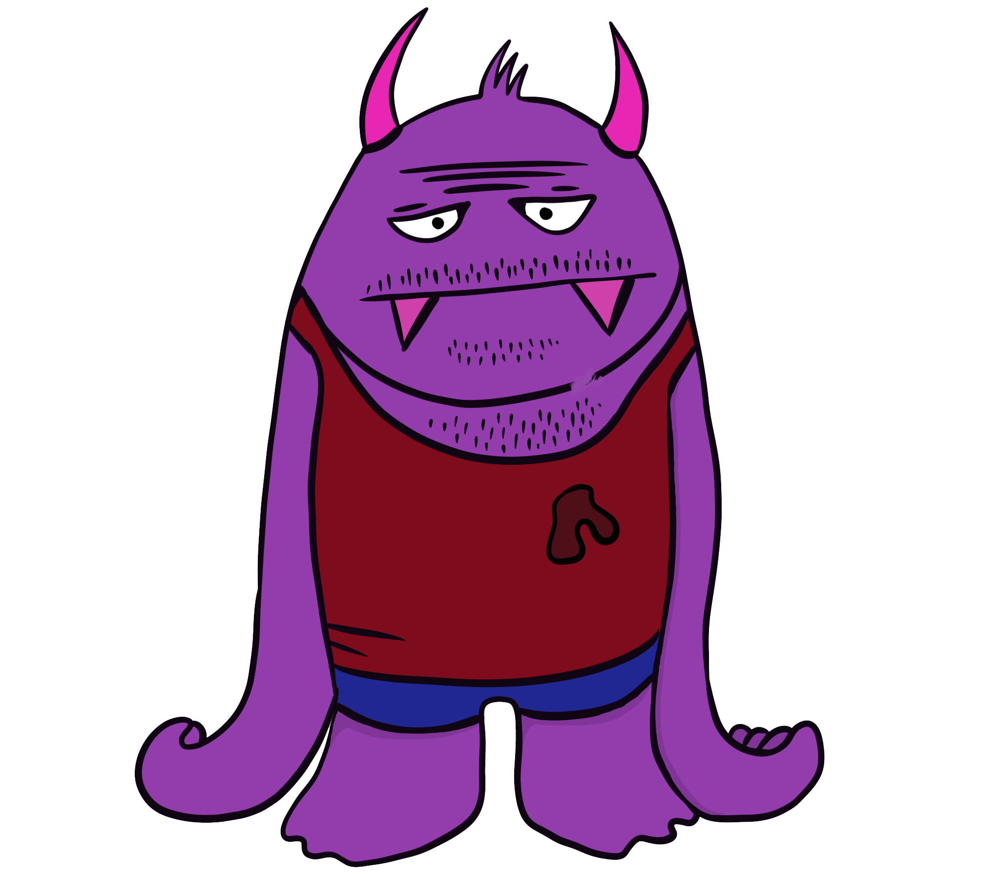
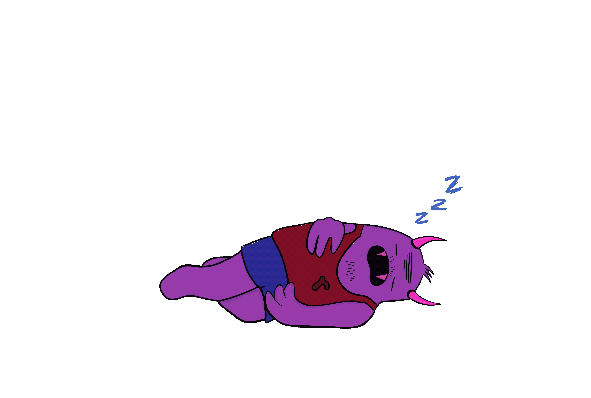

Projekt 1
Brush Drawing Tool (little tools)
Bei dieser Aufgabe bestand die Herausforderung darin, ein kleines Werkzeug zu entwickeln, ein sogenanntes "little tool". Meine Idee war es, einen Pinsel zu entwerfen, der sich nach einem Mausklick von einem Kreis zu einem Quadrat verwandelt. Die Nähe und Dichte der Formen hängt davon ab, wie langsam der Mauszeiger bewegt wird. Außerdem ist es möglich, die Größe des Pinsels mit den Pfeiltasten zu vergrößern oder zu verkleinern.
Der gegebene HTML-Code erstellt eine einfache Webseite für ein Zeichenwerkzeug mit einer Canvas-Anzeige. Hier ist der dazugehörige code:
Die eigentliche Interaktivität und das Zeichenwerkzeug werden in der JavaScript-Datei "sketch.js" implementiert, während das Erscheinungsbild der Seite in der CSS-Datei "style.css" gesteuert wird.
- brushSize: Größe des Pinsels wird standartmäßig auf 10 gesetzt.
- currentBrush: aktuelle Pinselart wird standartmäßig auf "circle" gesetzt.
- mouseIsPressed: ist die Maustaste gedrückt? Dann entweder "circle oder "square" malen.
- keyPressed (): Wird aufgerufen, wenn eine Taste gedrückt wird. Ändert die Pinselgröße mithilfe der Pfeiltasten nach oben (UP_ARROW) und unten (DOWN_ARROW). Die Pinselgröße wird um 5 Pixel erhöht oder verringert, wenn die Mindestgröße von 5 nicht unterschritten wird.
- mouseClicked: ändert die Pinselart.
Zusammenfassend ermöglicht dieser Code das Zeichnen von Kreisen und Quadraten auf einer Canvas-Anzeige mit der Maus. Die Pinselgröße kann mit den Pfeiltasten angepasst werden, und die Pinselart kann durch einen Mausklick gewechselt werden.
Hier wird der gesamte Inhalt der Webseite zentriert auf der Seite dargestellt, und ein Container mit einer schwarzen Umrandung dient wahrscheinlich dazu, den Zeichenbereich (Canvas) auf der Seite visuell zu markieren.


Projekt 2
"Mels weblog"
Bei diesem Projekt lautete die Aufgabe, eine eigene Website zu erstellen auf der eine App erklärt wird. Meine Wahl fiel auf Procreate, da ich diese am häufigsten verwende.
Der HTML-Code beschreibt die Struktur der Website "Mels Weblog".

Hier eine kurze Erklärung:
-html: markiert den Beginn und das Ende des HTML-Dokuments und gibt die Sprache an.
-head: dort befinden sich die Metadaten.
-body: sichtbarer Inhalt der Website.
-header: Überschrift der Website.
-p: Element mit verschiedenen Abschnitten von Text, die durch h2-Tags für die Untertitel und pre-Tags für den Tipp strukturiert sind.
Der vorliegende CSS-Code definiert das Styling für eine Webseite.

Insgesamt steuert der Code das Erscheinungsbild der Webseite durch Definitionen für Schriftarten, Farben, Abstände und Hintergrundbilder.
Wenn diese Codes dann ausgeführt werden, ensteht diese Website die ich gebaut habe.

Projekt 3
"My sleeping uncle"
Dieses Gruppenprojekt wurde gemeinsam mit dem gesamten Kurs entwickelt. In diesem Projekt haben wir ein Spiel namens "My Sleeping Uncle" entworfen, bei dem es darum geht, leise ein Sandwich zu holen, ohne den Onkel zu wecken. Dabei ist Vorsicht geboten, da jeder Schritt das Monster wecken könnte. Es gab verschiedene Teams, die jeweils ihre eigenen Aufgaben und Zuständigkeitsbereiche hatten. Ich war Teil des Design-Teams, das für die Gestaltung des gesamten Projekts verantwortlich war. Das bedeutet, dass wir uns Gedanken darüber machen mussten, wie die Raumgestaltung, die Farbgebung, die Webseite und die Charaktere aussehen sollten.
Ich habe mich darum gekümmert, das Monster bzw. den Onkel zu entwerfen und die Farben dafür auszuwählen. Danach habe ich die verschiedenen Zustände des Monsters animiert, von dem Schlafen über das kurz vor dem Aufwachen bis hin zum Jumpscare, der erscheint, wenn man das Spiel verliert.
Hier sieht man die Skizze für das Design des Monsters und der Entwuf wo dieser schläft.

Da am Anfang noch unklar war, wie wir den Raum gestalten würden, habe ich zur Sicherheit auch einen Raum für das Monster und das gesamte Geschehen entworfen.

Im Anschluss folgen die fertigen Animationen, die im Spiel durch einen Projektor auf einer Leinwand aus Folie visualisiert werden.

Fazit
In diesem Semester konnte ich durch den Kurs "Grundlagen der digitalen Gestaltung" einen Einblick in die Welt des Codings gewinnen. Anfangs war ich ehrlich gesagt überrascht und fühlte mich überfordert, aber nach und nach begann ich, immer mehr zu verstehen. Dadurch entwickelte ich zunehmend Spaß daran, eigene Codes zu schreiben und meine Ideen zu visualisieren. Auch wenn ich noch nicht alles verstehe, arbeite ich daran, mein Verständnis zu vertiefen, und freue mich darauf, noch mehr zu lernen. Besonders faszinierend fand ich es, meine eigene Website zu gestalten. Obwohl sie noch nicht perfekt ist, macht es mir Spaß, damit zu experimentieren und zu sehen, welche Veränderungen möglich sind und was ich bereits kann. Das Gruppenprojekt war ebenfalls sehr spannend, da jeder seinen Beitrag leistete, der am Ende zu einem stimmigen Ganzen zusammengefügt wurde.
-mel☆